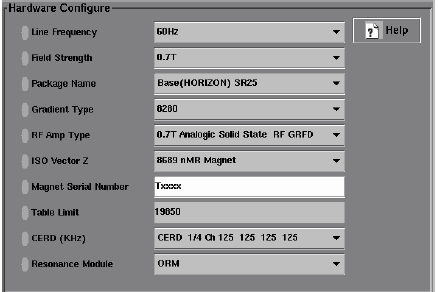

Operating Documentation
Direction 5133330-3, Rev# 14
Signa EXCITE HD 3.0T Service Methods
Module Version 1.0, Version Date 5/15/07
Operating Documentation |
Host IP Address: The Host IP should be obtained from the site network administrator if the scanner will be connected to the sites internal network. Or obtain and address by calling the OnLine Center (OLC) MR Support.
IWS PC IP Address: The IWS PC IP should be obtained from the site network administrator if the scanner will be connected to the sites internal network. Or obtain an address by calling the OnLine Center (OLC) MR Support.
FE Laptop IP Address: The Laptop IP should be obtained from the site network administrator if the scanner will be connected to the sites internal network. Or obtain an address by calling the OnLine Center (OLC) MR Support.
TPS Subnet Address: The TPS is on a subnet of the Signa LX scanner. A default address is loaded during the load from cold process and it should not be changed.
Hostname: This is the network name given to the scanner host computer.
Hospital Name: The Name of the hospital or other facility where the Horizon LX is installed. Name can include characters and/or integers up to 32 characters.
Doctors Title: The title to be used at the scanning site by the reading physician (Radiologist or Diagnostician).
Suite ID: Name of the Suite (if any) the scanner will be connected to. Leave blank otherwise.
Unique ID: The Unique System ID is a 16 alphanumeric character string assigned at the time the system is first installed. The Unique system ID is assigned by GE CARES when the first dispatch is opened to document the start of installation.
Service ID: The Service ID is a 16 alphanumeric character string assigned at the time the system is first installed. This is the same number that GE CARES uses to track financial and administrative data for the system.
Weight Unit: The weight system to be used by the scanner. Kilo Grams or US pounds.
Monitor type: The type of monitor the scanner will be using.
Windows 95 OEM Number: The Microsoft OEM Number found on the “Proof of Authenticity” for Windows 95. _______________
NetMask: For new installs, the Netmask should be obtained from the site network administrator if the scanner will be connected to the site’s internal network. If this is a stand-alone system, use the default netmask. For Release 8.3 and later, the netmask value is available from the Install GUI. For Release 8.2.5 systems, do the following to obtain the netmask value: [System Shutdown], Log in as Root, type operator <Enter>, select [Reconfig] then [Basic Network Setup] to view the netmask.
Illustration 1 shows the OpenSpeed Hardware Configuration setup.
Illustration 1: OPENSPEED HARDWARE CONFIGURATION
